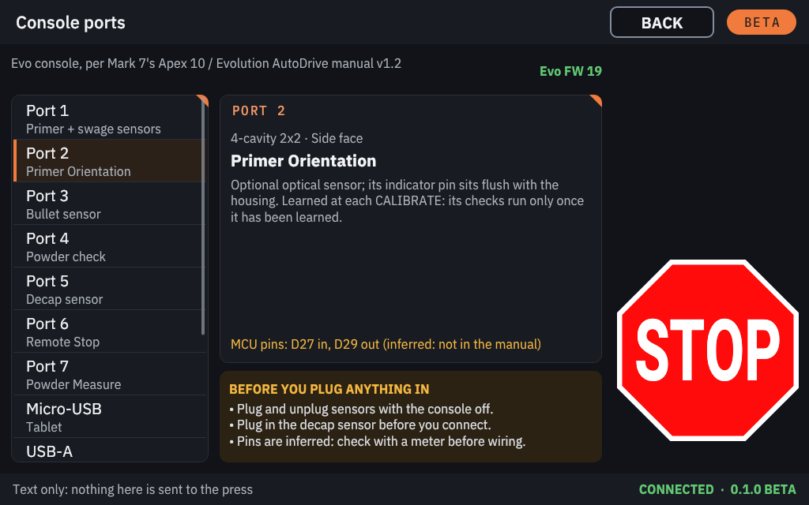
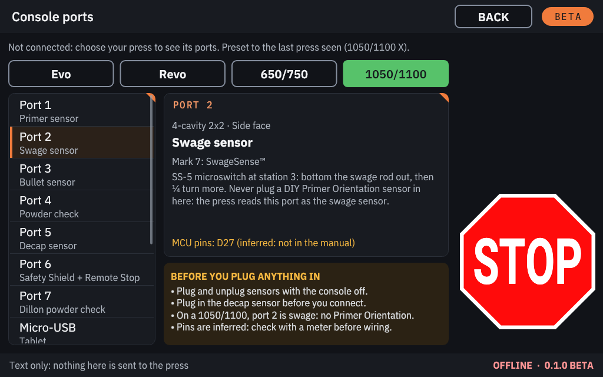

Console ports¶
The Mark 7 press console has seven sensor ports (4-cavity 2x2 connectors), a micro-USB port for the console (the Raspberry Pi), a USB-A port and an 8-pin connector for the ClearPath motor, and the power connectors. Which sensor goes into which port depends on the press. The tables below come from Mark 7's manuals.
The CONSOLE PORTS screen¶
The console shows the same information on screen. It only shows text: nothing is sent to the press.
- Open CONSOLE SETTINGS → CONSOLE PORTS, or CONSOLE PORTS on the press screen's Settings tab.
- With a press connected, the screen shows that press's console. Before connecting, pick a press family first (the last press seen is preselected).
- Tap a connector in the list on the left to see its details on the right. The BEFORE YOU PLUG ANYTHING IN box sums up the rules below.
 |
 |


The Sensors tab shows the same port number on each sensor's button. The console names each sensor plainly; where Mark 7 sells it under its own name, that name is shown beside it (for example BulletSense™). On screen the micro-USB port's device is called "Tablet": with KHC Press Console that is the Raspberry Pi.
Before you plug anything in¶
Warning
- Plug and unplug sensors with the press console switched off.
- Plug in the decap sensor (DecapSense™) before the console connects: the press looks for it only when it starts, and every connection restarts it.
- On a 1050/1100, port 2 is the swage sensor: never connect a DIY Primer Orientation sensor there.
- No manual gives a pinout of the ports (the pins the screen shows are inferred). Do not wire anything of your own to them without checking with a meter.
- Never plug anything into the USB-A port except the ClearPath motor's cable.
Evo (Mark 7 Apex 10 Evolution)¶
From Mark 7's Apex 10 / Evolution AutoDrive manual.
| Port | Sensor | Note |
|---|---|---|
| 1 | Primer sensor + swage sensor (PrimerSense™ + SwageSense™) | The swage sensor plugs into a pigtail off the primer sensor's cable. Remove the primer sensor's battery when it is connected. |
| 2 | Primer Orientation | Optional. Learned at each CALIBRATE: its checks run only once it has been learned. |
| 3 | Bullet sensor (BulletSense™) | Laser sensor, powered by the console. |
| 4 | Powder check (PowderCheck™) | Optical powder check (the manual's PowderSense). |
| 5 | Decap sensor (DecapSense™) | Optical spent-primer sensor. Plug it in before the console connects. |
| 6 | Remote Stop | Wired remote stop, optional. |
| 7 | Powder Measure | Digital Powder Measure communication cable. |
The Machine Guard has no numbered port in the manual.
Revo (Mark 7 Revolution)¶
From Mark 7's Revolution manual.
| Port | Sensor | Note |
|---|---|---|
| 1 | Swage sensor (SwageSense™) | Microswitch on the swage back-up. The Revo's low-primer switch goes to the vibratory controller, not here. |
| 2 | Primer Orientation | Optional. Learned at each CALIBRATE. |
| 3 | Bullet sensor (BulletSense™) | With a clear plate, RUN or SINGLE CYCLE must raise the bullet sensor alert. |
| 4 | Powder check (PowderCheck™) | Rod at station 7. Test with an empty and a double charge. |
| 5 | Decap sensor (DecapSense™) | Under station 2; clean it with compressed air. Plug it in before the console connects. |
| 6 | Remote Stop | Wired remote stop, optional. |
| 7 | Powder Measure | Communication cable to the measure's electronics box. |
The Machine Guard and the primer sensor have no numbered port in the manual.
1050/1100 (PRO, X, LTE)¶
From Mark 7's 1050 PRO AutoDrive manual.
| Port | Sensor | Note |
|---|---|---|
| 1 | Primer sensor (PrimerSense™) | Microswitch on the Dillon low-primer alarm. |
| 2 | Swage sensor (SwageSense™) | Microswitch at station 3. Never plug a DIY Primer Orientation sensor in here. |
| 3 | Bullet sensor (BulletSense™) | With a clear plate, RUN or SINGLE CYCLE must raise the bullet sensor alert. |
| 4 | Powder check (PowderCheck™) | Mark 7's optical powder check. |
| 5 | Decap sensor (DecapSense™) | Plug it in before the console connects. Clean it every 500-700 rounds with compressed air; no solvents. |
| 6 | Safety Shield + Remote Stop | The shield cable has a pigtail for the remote stop. RUN, END CYCLE and SINGLE CYCLE are refused while the shield is open; JOG is not. |
| 7 | Dillon powder check | Mark 7 cable to the Dillon powder check at station 6 (the manual's PowderSense). |
One Powder check switch on the Sensors tab covers ports 4 and 7 (PORTS 4 + 7).
650/750 (PRO, X)¶
From Mark 7's 650 X & PRO AutoDrive manual.
| Port | Sensor | Note |
|---|---|---|
| 1 | Primer sensor (PrimerSense™) | Microswitch on the Dillon low-primer alarm. |
| 2 | (unused) | The manual lists no sensor here. |
| 3 | Bullet sensor (BulletSense™) | Set its height with the platform at home, after a calibration. |
| 4 | (unused) | The manual lists no sensor here. |
| 5 | Decap sensor (DecapSense™, standard) | Mounts under the platform. Plug it in before the console connects. |
| 6 | Remote Stop | Wired remote stop, optional. |
| 7 | Dillon powder check | The Dillon powder check switch (the manual's PowderSense). |
The Machine Guard has no numbered port in the manual.
Evo PRO, Duals and GAP PRO¶
Their own manuals were not available. CONSOLE PORTS shows their family's table (Evo or Revo) with a note saying so, and the Sensors tab shows no port numbers for them.
The other connectors¶
The same on every model:
| Connector | What it is |
|---|---|
| Micro-USB | The link to the console. A USB-A to micro-USB data cable from here to a USB port of the Raspberry Pi. |
| USB-A | Motor USB, to the back of the ClearPath motor. Nothing else, ever. |
| 8-pin | Motor signal cable, into the top of the motor. |
| AC inlet with ON/OFF | Mains power. The switch is the press's hard stop. |
| Motor 6-pin | Motor DC power. Never switch the press console on without it, and never plug or unplug it with the power on. |
| Tablet DC | Power for Mark 7's tablet. The Raspberry Pi uses its own power supply. |